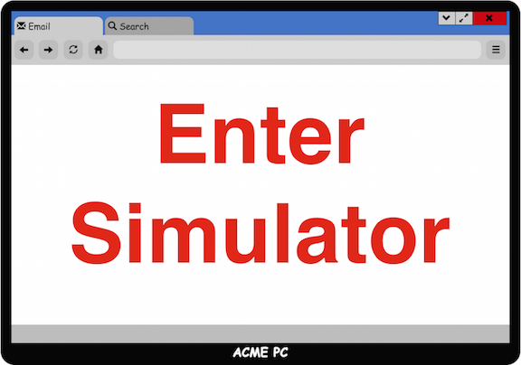

Welcome to the Cyber Security Simulator. This simulator will place you in front of a virtual computer where you will
check your email, perform some web searches, and explore some websites.
Your tasks for the simulation are listed at the right of your virtual computer. Your mail is accessible in the "Email" tab,
and your internal search engine is available on the "Search" tab. Use the left and right arrows at the top-right of
your virtual email and search tabs to navigate between your various emails and searches.
As context for the simulation, you are working for ACME corporation. You and your coworkers have email address using
the format [First Name].[Last Name]@acme.com. You commonly work with Benjamin Brown, Clay Colwell, and
Eben Norvell. During your daily operations, you interact with Google Drive very often. You also sometimes receive
Dropbox links, Social Media notifications, your US Bank notifications and other personal items.
Note: The "Back", "Forward", "Refresh" and "Home" buttons of your simulated browser do not function. Use the tabs to
navigate between sections.